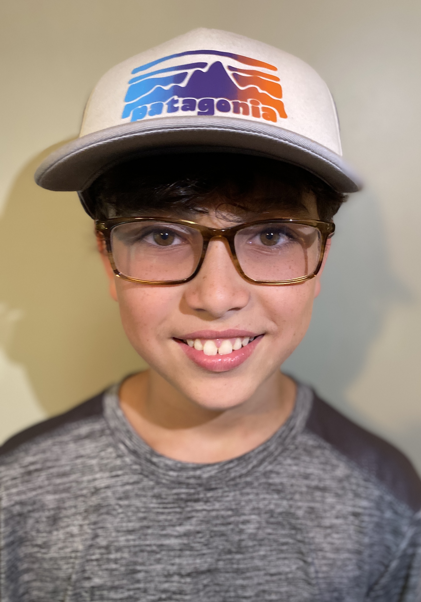

Hi! I am a 12 year old upcoming artist with an album coming out in approximately around a year at this pace. I play guitar, piano, drums, etc. In my music, I record and produce each track. My recording set-up is a Fender FA-135 Acoustic Guitar, and my electric guitars I use are the Fender Stratocaster with a maple wood neck, and a Hamer Slammer XP-1, and my drum set is the Pearl Roadshow Complete Kit, and I also use the Yamaha DGX-550 Keyboard, and I also use more stuff like shakers, and maybe some different sound effects, etc.
